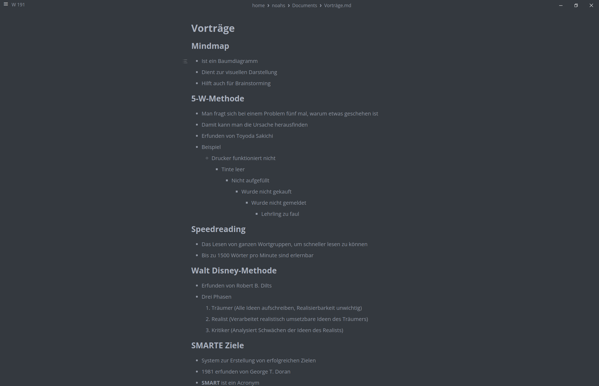
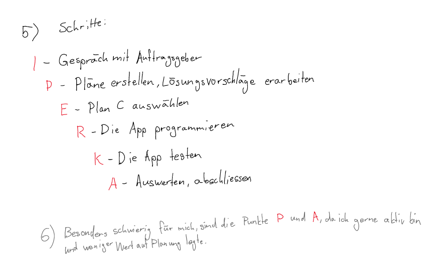

Informations-
beschaffung
Notizen machen
Aufgabe 1
| Beispiel Markdown |  |
| Beispiel OneNote |  |
Aufgabe 2
| Tipps für gute Notizen |
|
Aufgabe 3
| Vergleich | Ich persönlich schreibe meine Notizen auf dem Laptop. Auch den Tip, nicht alles mitzuschreiben, habe ich lange nicht befolgt. Ich denke, ich sollte mir diese Tipps zu Herzen nehmen und tatsächlich verwenden. |
Informationen strukturieren
Aufgabe 1
| Antwort | Ich strukturiere Informationen gerne hierarchisch. Für verschiedene Informationen und Kategorien verwende ich gerne Überschriften, um die einzelnen Informationen zusammenzufassen. |
| Beispiel |  |
Aufgabe 2
| Gewähltes Tool | Google Keep |
| Vorteile |
|
| Nachteile |
|
| Erfahrungen | Ich mag dieses Tool sehr, und ich benutze es häufig, um meine Notizen zu speichern. Die Sache mit der Unterordnung stört mich jedoch... Ich würde gerne strukturierte Listen erstellen mit mehr als bloss eine Stufe. |